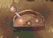

| 概要 | 情報 | アイテム一覧 |
| 敵キャラ一覧 | ステージ一覧 | 夢幻迷宮について |
| 攻略チャート | Zwei!! 攻略へ |
| ステージ選択へ |
カヤパの森 Lv.33
| A  |
部屋AにあるレバースイッチをOFFにすると、上の扉が開き、ONにすると下の扉が開きます。 |
| B | B地点に移動すると、通路に敵が現れます。 |
| C | C'地点の風船を割ると、C地点の扉が開きます。 |
| D | フロアが変わった瞬間に敵が現れます。 |
E |
E地点にあるボタンスイッチをONすると、フロアに風が吹き始めます。 また、F-F'間、F''-F'''間をトゲが動くので注意してください。 |
| G | G地点の扉を開けるには、部屋G'、G''にある風船を割らなければなりません。 ただし、風船を割ると敵が現れます。 |
| (矢印) | 一方通行の扉の開く向きです。 |
| H | 部屋Hの風船を割ると、敵が現れます。 |
| J | 部屋Jの風船を割ると、J'へ続く扉が閉じてしまいます。 |
| K | 部屋Kにあるツボを割ると、K'へ続く扉が閉じてしまいます。 |
| L | 部屋Lにある宝箱を開くと、部屋に敵が現れます。 |
| M | 部屋Mの中央へ移動すると、敵が現れて囲まれます。 注意してください。 |
| ステージ選択へ |
| 概要 | 情報 | アイテム一覧 |
| 敵キャラ一覧 | ステージ一覧 | 夢幻迷宮について |
| 攻略チャート | Zwei!! 攻略へ |
Zwei!!
| 目次へ戻る | ページの上部へ |